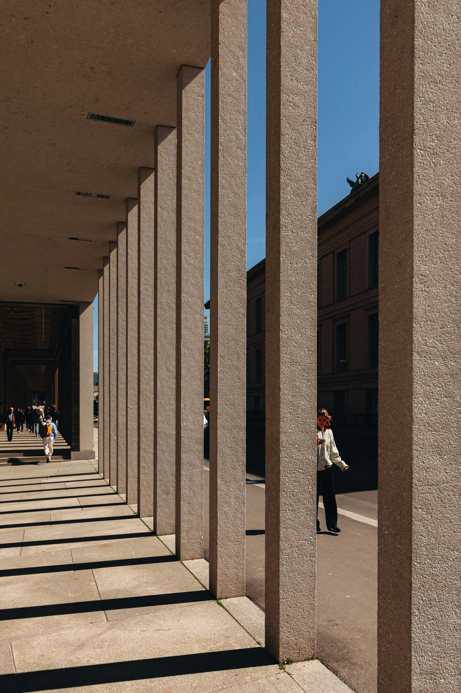

ESCUTA & PROXIMIDADE
Antes de tudo,
escutar.
Cada história tem seu contexto. O primeiro passo é compreender sua situação, suas dúvidas e o que realmente importa para você.
RODRIGUES FERNANDES01 / 03
RF.
Mais do que questões jurídicas,
cuidamos do que é importante para você.

A Rodrigues Fernandes Advocacia está em Guararapes, São Paulo. Um espaço para compreender suas questões e conversar sobre os próximos passos.
Nosso propósito é aproximar o direito da sua realidade, com uma comunicação clara e um olhar cuidadoso para cada situação.
Uma relação de confiança começa na escuta e se constrói com clareza e responsabilidade.
Cada história tem seu contexto. O primeiro passo é compreender sua situação, suas dúvidas e o que realmente importa para você.
Traduzir questões jurídicas em informação compreensível. Entender os caminhos possíveis é essencial para uma decisão consciente.
Uma atuação pautada pela ética, pela atenção aos detalhes e pelo respeito às particularidades de cada questão.
Encontre a Rodrigues Fernandes Advocacia
em Guararapes e conheça o escritório.